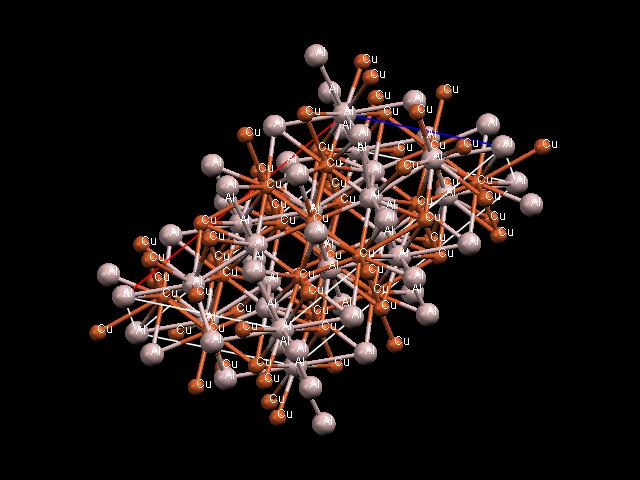

Darva Glass (Amorphous Steel)
Darva Glass (Amorphous Steel)
In materials science, rather than haphazardly looking for and discovering materials and exploiting their properties, one instead aims to understand materials fundamentally so that new materials with the desired properties can be created.

"The basis of all materials science involves relating the desired properties and relative performance of a material in a certain application to the structure of the atoms and phases in that material through characterization. The major determinants of the structure of a material and thus of its properties are its constituent chemical elements and the way in which it has been processed into its final form. These, taken together and related through the laws of thermodynamics, govern a material’s microstructure, and thus its properties.
"An old adage in materials science says: "materials are like people; it is the defects that make them interesting." The manufacture of a perfect crystal of a material is currently physically impossible. Instead materials scientists manipulate the defects in crystalline materials such as precipitates, grain boundaries (Hall-Petch relationship), interstitial atoms, vacancies or substitutional atoms, to create materials with the desired properties.
"Not all materials have a regular crystal structure. Polymers display varying degrees of crystallinity, and many are completely non-crystalline. Glasses, some ceramics, and many natural materials are amorphous, not possessing any long-range order in their atomic arrangements. The study of polymers combines elements of chemical and statistical thermodynamics to give thermodynamic, as well as mechanical, descriptions of physical properties.
"In addition to industrial interest, materials science has gradually developed into a field which provides tests for condensed matter or solid state theories. New physics emerge because of the diverse new material properties which need to be explained." (Wikipedia)